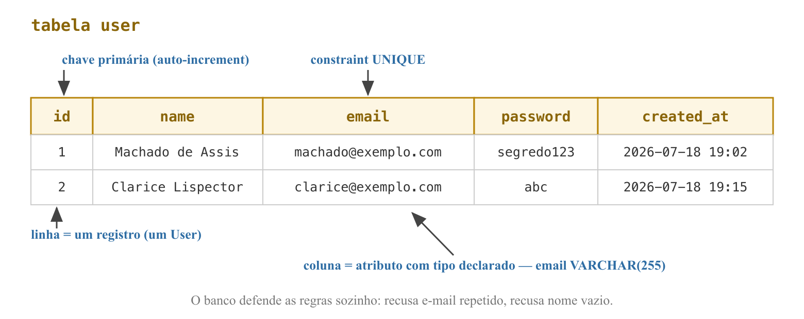
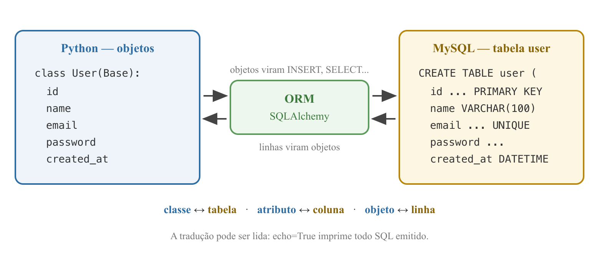
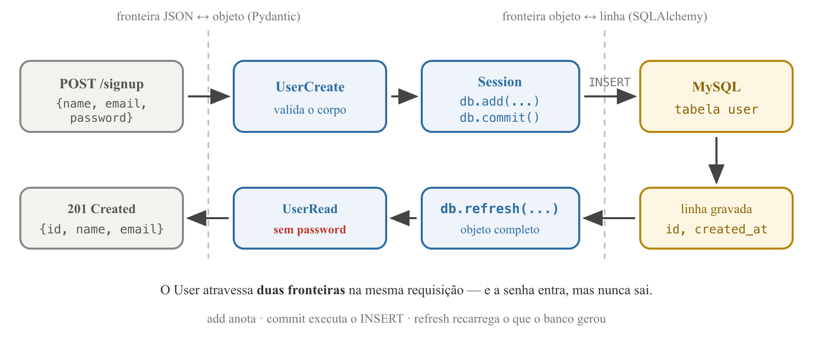

Programação Avançada — Aula 04
Universidade Unirios
O CRUD de Books está completo — GET, POST, PUT e DELETE — com schemas Pydantic validando entrada e saída, e ids gerados por um contador monotônico.
Duas fraquezas atravessaram as aulas 02 e 03 sem solução:
POST /signup."O modelo relacional fornece um meio de descrever dados apenas por sua estrutura natural — sem sobrepor qualquer estrutura adicional para fins de representação na máquina."
CODD, E. F. — A Relational Model of Data for Large Shared Data Banks, CACM, 1970

CODD, E. F. — A Relational Model of Data for Large Shared Data Banks, CACM, 1970
next_book_id da aula 03 — mas não morre com o processo;CHAMBERLIN, D.; BOYCE, R. — SEQUEL: A Structured English Query Language, ACM SIGFIDET, 1974
reading_tracker.Documentação oficial do MySQL — dev.mysql.com/doc
CREATE TABLE user (
id INT AUTO_INCREMENT PRIMARY KEY,
name VARCHAR(100) NOT NULL,
email VARCHAR(255) NOT NULL UNIQUE,
password VARCHAR(255) NOT NULL,
created_at DATETIME DEFAULT CURRENT_TIMESTAMP
);
INSERT INTO user (name, email, password)
VALUES ('Machado de Assis', 'machado@exemplo.com', 'segredo123');
SELECT id, name, email FROM user;
No fim da aula, ninguém digita este CREATE TABLE — o ORM o escreve por nós.
UNIQUE, NOT NULL) são defendidas pelo banco, sozinho;A partir de hoje o backend são dois processos: o uvicorn (porta 8000) e o servidor MySQL (porta 3306) — e a nossa API é o cliente do banco.
Mac
brew install mysql
brew services start mysql
mysql -u root
Windows
MySQL Installer (Server only) emdev.mysql.com/downloads/installer
Define a senha do root na instalação.
Cliente: MySQL Command Line Client.
root nasce sem senha. Windows: o instalador obriga a definir uma — anote-a.
CREATE DATABASE reading_tracker;
USE reading_tracker;
CREATE TABLE user ( ... ); -- o CREATE do slide anterior
INSERT INTO user (name, email, password) VALUES (...);
SELECT id, name, email FROM user;
DESCRIBE user;
id veio 1 sem ninguém pedir; o created_at se preencheu sozinho;INSERT repetido → ERROR 1062: Duplicate entry — o UNIQUE trabalhando;DROP TABLE user; — daqui em diante, quem escreve o CREATE TABLE é o ORM.book.name);FOWLER, M. — Patterns of Enterprise Application Architecture, 2002
Técnica que traduz automaticamente entre o mundo dos objetos e o mundo das relações: o programa manipula objetos; o ORM emite o SQL.
FOWLER, M. — Patterns of Enterprise Application Architecture, 2002

FOWLER, M. — Patterns of Enterprise Application Architecture, 2002 · docs.sqlalchemy.org
user.save());.save() — quem grava é a Session.FOWLER, M. — Patterns of Enterprise Application Architecture, 2002 · docs.sqlalchemy.org
| SQL cru (driver direto) | ORM (SQLAlchemy) | |
|---|---|---|
| Consulta | string SQL montada à mão | select(User).where(...) |
| Resultado | tuplas cruas, conversão manual | objetos User prontos |
| Schema | CREATE TABLE à mão | gerado dos models (create_all) |
| Erro de digitação | explode em runtime | falha no Python, na hora |
| Trocar de banco | reescrever dialetos | trocar a string de conexão |
| Controle fino do SQL | total | parcial |
echo=True: cada operação imprime no terminal o SQL emitido;echo=True.
pip install sqlalchemy pymysql cryptography
pip freeze > requirements.txt
from sqlalchemy import create_engine
from sqlalchemy.orm import DeclarativeBase, sessionmaker
DATABASE_URL = "mysql+pymysql://root@127.0.0.1:3306/reading_tracker"
engine = create_engine(DATABASE_URL, echo=True)
SessionLocal = sessionmaker(bind=engine)
class Base(DeclarativeBase):
pass
echo=True: didático e deliberado);
mysql+pymysql://root@127.0.0.1:3306/reading_tracker
└─────┬──────┘ └┬─┘ └───┬───┘ └┬─┘ └──────┬──────┘
dialeto+driver user host porta banco (caminho)
root:minhasenha@... — credenciais antes do @.RFC 3986 — Uniform Resource Identifier (URI): Generic Syntax, IETF, 2005
from datetime import datetime
from sqlalchemy import String, func
from sqlalchemy.orm import Mapped, mapped_column
from database import Base
class User(Base):
__tablename__ = "user"
id: Mapped[int] = mapped_column(primary_key=True)
name: Mapped[str] = mapped_column(String(100))
email: Mapped[str] = mapped_column(String(255), unique=True)
password: Mapped[str] = mapped_column(String(255))
created_at: Mapped[datetime] = mapped_column(server_default=func.now())
Mapped[int], Mapped[str] — anotações de tipo como fonte de verdade (a ideia do Pydantic, agora na fronteira com o banco);primary_key=True num inteiro → PRIMARY KEY e AUTO_INCREMENT;String(100) — o MySQL exige tamanho para VARCHAR;unique=True — a constraint mora no banco, não no Python;server_default=func.now() — quem preenche é o banco;_at.
from fastapi import Depends, FastAPI, HTTPException
from pydantic import BaseModel, ConfigDict
from sqlalchemy import select
from sqlalchemy.orm import Session
import models
from database import Base, SessionLocal, engine
Base.metadata.create_all(bind=engine)
app = FastAPI()
import models vem antes: é ele que registra User no metadata da Base;echo mostra o CREATE TABLE user (...) — o SQL do quadro, escrito pelo ORM;SHOW TABLES; e DESCRIBE user;.create_all cria o que não existe; tabela existente fica intocada;DROP TABLE e deixar recriar — dado de aula é descartável;
class UserCreate(BaseModel):
name: str
email: str
password: str
class UserRead(BaseModel):
model_config = ConfigDict(from_attributes=True)
id: int
name: str
email: str
id; o que sai não tem password — o response_model é o filtro;UserRead, não User: este nome já pertence ao model do banco;from_attributes=True: o schema lerá atributos de objeto (user.email), não chaves de dicionário.
def get_db():
db = SessionLocal()
try:
yield db
finally:
db.close()
Depends(get_db) — injeção de dependência: a rota declara o que precisa, o framework entrega pronto e garante o close(), com sucesso ou erro;get_db é o ensaio geral.
@app.post("/signup", response_model=UserRead, status_code=201)
def signup(user: UserCreate, db: Session = Depends(get_db)):
new_user = models.User(name=user.name, email=user.email,
password=user.password)
db.add(new_user)
db.commit()
db.refresh(new_user)
return new_user
add — anota a intenção; nada foi ao banco;commit — executa o INSERT e confirma a transação;refresh — recarrega o que o banco gerou: id e created_at;FOWLER, M. — Patterns of Enterprise Application Architecture, 2002

SELECT * FROM user; — a senha está lá, legível;Ctrl+C e subir de novo);GET /api/books → a lista voltou aos três livros (memória, morreu);SELECT * FROM user; → o User continua lá (banco, sobreviveu);id = 2: o auto-increment também sobreviveu — ao contrário do finado next_book_id.Signup repetido → 500 (IntegrityError: Duplicate entry). O banco defendeu a regra, mas 5xx diz "culpa do servidor" — e a culpa é do pedido. O código certo: 409 Conflict.
existing_user = db.scalar(
select(models.User).where(models.User.email == user.email))
if existing_user is not None:
raise HTTPException(status_code=409,
detail="Email already registered")
echo: SELECT ... WHERE user.email = %s, com parâmetro.if — a última defesa é o UNIQUE no banco. É para isso que a constraint existe.age: Mapped[int];age: int aos dois schemas e passe-o na criação do models.User(...);DROP TABLE user;, reinicie o uvicorn e assista ao create_all recriar a tabela — agora com age.age — desfazer, DROP TABLE user; e reiniciar. A aula 05 parte do model original.add/commit/refresh);create_all materializou o model User na tabela que antes escrevemos à mão;POST /signup: a primeira rota persistente — 201 sem senha na resposta, 409 no e-mail repetido;O User mora no banco, mas os Books continuam morrendo a cada restart — e livro não tem dono.
/users/{user_id}/books do nosso mapa REST.